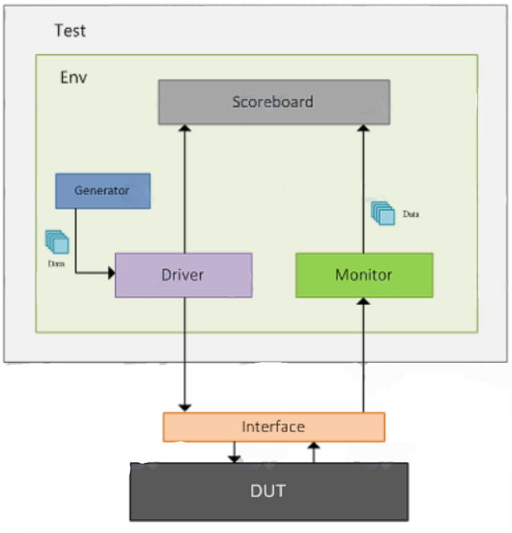

🧪 Testbench
Date: April 19, 2025
A testbench is a virtual simulation environment used to verify the functionality of a design (DUT - Design Under Test). It applies input stimulus, observes the outputs, and checks whether the DUT behaves as expected.
🧭 What Does a Testbench Do?
- ✅ Generates different types of input stimulus
- ✅ Drives the DUT inputs with the generated stimulus
- ✅ Allows the DUT to process input and produce output
- ✅ Monitors and checks DUT outputs against expected results
- ✅ Identifies functional bugs
- ✅ Fixes bugs in design or verification code
- 🔁 Repeats the above steps until the DUT is functionally correct
🧱 Components of a Testbench
A well-structured testbench is modular, scalable, flexible, and reusable. It separates various verification functionalities into independent components for better maintainability and reuse.
📦 Testbench Block Diagram
🔍 Testbench Components Explained
| Component | Description |
|---|---|
| Generator | Generates various input patterns (stimuli) to test different scenarios |
| Interface | Connects the DUT and verification components; holds shared signals |
| Driver | Drives signals from generator to DUT via interface |
| Monitor | Observes and captures signals from the DUT for checking |
| Scoreboard | Compares DUT outputs with expected results, logs mismatches |
| Environment | Contains and connects all the components (driver, monitor, scoreboard, etc.) |
| Test | Controls the environment; allows configuration for different testing scenarios |